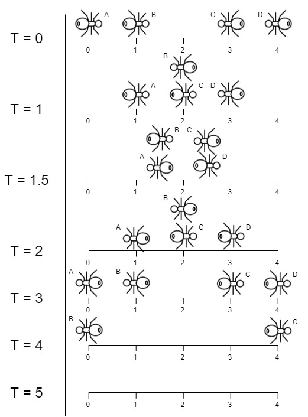
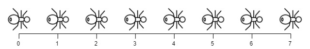

We have a wooden plank of the length n units. Some ants are walking on the plank, each ant moves with speed 1 unit per second. Some of the ants move to the left, the other move to the right.
When two ants moving in two different directions meet at some point, they change their directions and continue moving again. Assume changing directions doesn't take any additional time.
When an ant reaches one end of the plank at a time t, it falls out of the plank imediately.
Given an integer n and two integer arrays left and right, the positions of the ants moving to the left and the right. Return the moment when the last ant(s) fall out of the plank.
Example 1:
Input: n = 4, left = [4,3], right = [0,1] Output: 4 Explanation: In the image above: -The ant at index 0 is named A and going to the right. -The ant at index 1 is named B and going to the right. -The ant at index 3 is named C and going to the left. -The ant at index 4 is named D and going to the left. Note that the last moment when an ant was on the plank is t = 4 second, after that it falls imediately out of the plank. (i.e. We can say that at t = 4.0000000001, there is no ants on the plank).
Example 2:
Input: n = 7, left = [], right = [0,1,2,3,4,5,6,7] Output: 7 Explanation: All ants are going to the right, the ant at index 0 needs 7 seconds to fall.
Example 3:
Input: n = 7, left = [0,1,2,3,4,5,6,7], right = [] Output: 7 Explanation: All ants are going to the left, the ant at index 7 needs 7 seconds to fall.
Example 4:
Input: n = 9, left = [5], right = [4] Output: 5 Explanation: At t = 1 second, both ants will be at the same intial position but with different direction.
Example 5:
Input: n = 6, left = [6], right = [0] Output: 6
Constraints:
1 <= n <= 10^40 <= left.length <= n + 10 <= left[i] <= n0 <= right.length <= n + 10 <= right[i] <= n1 <= left.length + right.length <= n + 1left and right are unique, and each value can appear only in one of the two arrays.